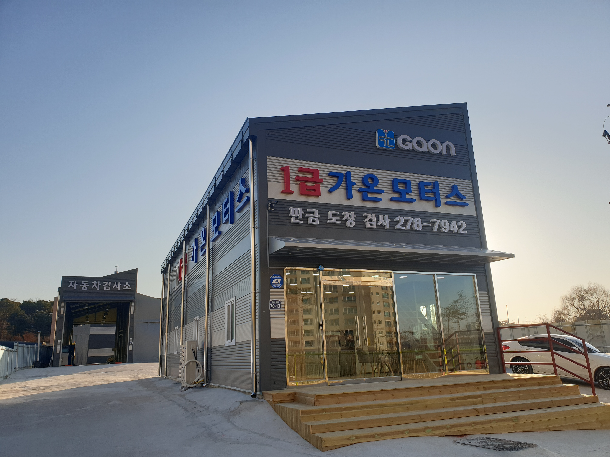

가 온
가온모터스
가온기획
가온평생교육원
가온모빌리티

우리나라 자동차 등록대수는 올 3분기 기준 2천535만대를 기록했다. 국민 2명 중 1명은 자동차를 보유하고 있는 셈이다.
매 분기마다 10만대 이상 증가하고 있어 등록대수가 3천만대를 돌파하는 것은 시간문제다.
자동차가 늘어나면서 정비에 대한 중요성이 더욱 강조되고 있다.
특히 겨울철 날씨가 급격하게 추워지고 건조해지면서 엔진, 배터리 등에 결함이 발생할 확률이 높아졌다.
1급 자동차공업사인 가온모터스는 갑작스러운 차량 이상 사태에 대비한 정비·검사는 물론이고 자동차판금·수리 등 자동차 관련 모든 작업을 진행하고 있다.
완벽한 정비를 통해 수리받은 부분의 이상으로 재입고되는 것을 막고, 저렴한 서비스 가격을 유지하는 것이 시간이 지나도 변하지 않는 가온모터스만의 '철칙'이다.
2019년 1월 1일 수원에 처음 문을 연 가온모터스는 이곳만의 친절하고 꼼꼼한 정비 덕분에 순식간에 단골고객이 늘어났다.
자동차 공업사가 우후죽순 늘어나는 상황에서 소비자들은 이렇다할 정보가 없어 선택에 어려움을 겪는다. 얼마나 단골고객이 많은가는 그 실력을 가늠할 수 있는 지표가 되기도 한다.
이창훈 대표는 "수원에 처음 문을 연 이후 친절과 정성으로 안전을 서비스하는 업체가 되기 위해서 노력했다"며 "만 4년이 되지 않았지만 많은 충성 고객들이 있다. 초심을 잃지 않고 더욱 고객과 소통하는 공업사가 되겠다"고 전했다.